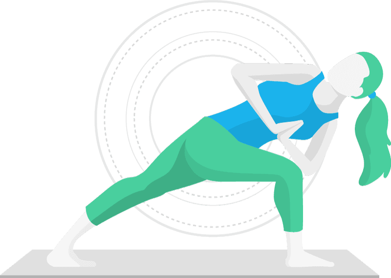
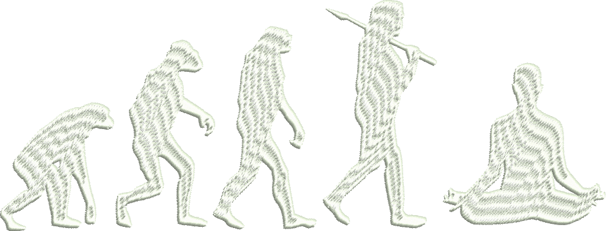
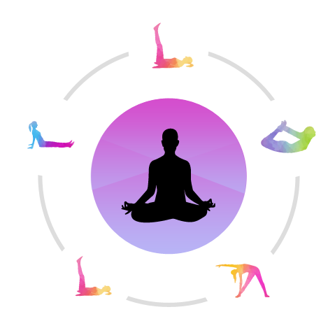

kANIMOZHI YOGA CLUB
Stay Fit|Live Fit|Love Fit
What is Yoga?
Yoga is the Sanskrit word for union. Yoga was introduced by Indian Ascetic. It is both spiritual and physical. Yoga uses breathing techniques, exercise and meditation. It helps to improve health and happiness.Maharishi Patanjali, rightly called "The Father of Yoga" compiled and refined various aspects of Yoga systematically in his "Yoga Sutras". He advocated the eight folds path of Yoga, popularly known as "Ashtanga Yoga" for all-round development of human beings. They are Yama, Niyama, Asana, Pranayama, Pratyahara, Dharana, Dhyana and Samadhi. *Ayurveda *Yoga *Naturopathy *Unani *Siddha

Yoga as evolutionary process:
Yoga is an evolutionary process in the development of human consciousness. Evolution of total consciousness does not necessarily begin in any particular man rather it begins only if one chooses it to begin. The vices like use of alcohol and drugs, working exhaustively, indulging too much in sex and other stimulation is to seek oblivion, a return to unconsciousness. Indian yogis begin from the point where western psychology end. If Fraud’s psychology is the psychology of disease and Maslow’s psychology is the psychology of the healthy man then Indian psychology is the psychology of enlightenment. In Yoga, it is not a question of psychology of man rather it is a question of higher consciousness. It is not also the question of mental health, rather, it is question of spiritual growth.

Yoga is Universal:
Yoga is universal in character for practice and application irrespective of culture, nationality, race, caste, creed, sex, age and physical condition. Neither by reading the texts nor by wearing the garb of an ascetic, one can become an accomplished Yogi. Without practice, no one can experience the utility of Yogic techniques nor can realize of its inherent potential. Only regular practice (sadhana) creates a pattern in body and mind to uplift them. It requires keen desire on the part of the practitioner to experience the higher states of consciousness through training the mind and refining the gross consciousness.

Types of yoga:
- Classification based on mind and body.
- Rajayoga: Emphasizes the most on exercise
- Hathayoga: Emphasizes the most on exercise of physical body.
- Classification based on way of spiritual life.
- Gyanyoga: It is a way of knowledge.
- Karmayoga: It is a way of work.
- Bhaktiyoga: It is a way of worship.
- Classification based on a way of other things.
- Swaryoga: Emphasizes the most on breathing.
- Kriyayoga: Emphasizes the most on blending Karmayoga (Tapa), Gyanyoga (Swadhyay) and Bhaktiyoga (Ishwar Pranidhan).
Yoga for Beginners:
Know about Yoga!
Yoga is done in bare feet on a yoga mat. Even the most basic yoga stretches require clothes that can stretch or move, so wear the most comfortable outfit that allows you to move around easily. If you’re doing a gentle, slower class then dress warm (sweat pants, long sleeve shirt) and if it’s a more rigorous class wear shorts and a t-shirt or a tank top. Teachers will often suggest that you leave your ego at the door, and that includes not being self-conscious about the clothes you are wearing. Wear what makes you feel good. Some classes use additional equipment or props, such as straps, blocks, bolsters, blankets and chairs. You don’t need to purchase any of these to begin doing yoga. If you’re going to attend a class at a studio they will provide everything that you need. However, if you’re doing a class online you will need a yoga mat and you will want to check to see whether additional equipment is needed. If it is, there are easy ways to replace common yoga props. For example, you can use a belt or rope instead of a strap. If a bolster is needed, you can check out this short video on how to make a bolster at home. The teachers on Do Yoga With Me frequently recommend alternatives for those who don’t own the prop that is required in that particular class. If you’re going to purchase anything, you should buy a yoga mat. Most studios provide mats for free or rental, but they are often cheaper plastic mats and you will likely feel better on a mat that you chose yourself. Mats come in all sizes and materials so it’s good to educate yourself, particularly if you’re looking for something non-toxic and supportive on joints such as knees and wrists.
Purpose of Yoga:
There are so many benefits of doing yoga. Yoga can help you to,
- improve and maintain the health of muscles, joints and organs
- keep your mind healthy
- get a better night’s sleep
- improve performance and prevent injuries in sports
- speed recovery from training
- prevent conditions such as diabetes, heart disease and auto-immune disorders
- slow down the negative effects of an office job
- increase your sense of happiness and well being.
Everybody must know about Yoga?
Yes,Everybody must know about Yoga as it connects both the soul & body.Many of the expectations of a yoga studio are similar to any class – arrive early, don’t wear perfume, and don’t interrupt the teacher. Questions are always welcome, but you may want to ask at the beginning or end of the class, depending on how many students are present. If you’re doing a class with Do Yoga With Me, you’ll be in your own home so do what you want! Every instructor has a different overall approach to teaching. Some focus more on physical postures, some on meditation. Some do mantra and some don’t. Some do adjustments to their students and others don’t. Your experience from one class to another can be radically different, even within the same yoga style. So don’t give up if you didn’t enjoy your first class. For example, although they both teach Power Yoga, our two Do Yoga With Me instructors Fiji McAlpine and Tracey Noseworthy have very different styles and there are many who prefer one over the other, and many also who enjoy taking classes with them both. A yoga class is meant to be a place where you feel comfortable and cared for – a space without judgment. Don’t worry if you are unable to keep up with everyone. It’s more important to go at your own pace to ensure that you do everything safely. You don’t need to know the names of poses to participate. Most instructors provide clear instruction throughout and tips for alignment and positioning.
Is that Yoga makes quick weight loss?
Yoga is not a good cardio workout, so it is generally not an effective way to lose weight. However, it is a whole body workout that can make you work very hard, sweat and, in some cases, exhaust yourself. Its strength is in toning the body through challenging physical exercise and improving overall health through increased flexibility, body awareness and relaxation.
How often should beginners do Yoga?
If you’re able to practice yoga 3 times or more per week, you will likely see significant improvements in areas such as flexibility, joint range of motion, strength, balance, ability to manage stress, quality of sleep, happiness and overall well being. Everyone’s bodies are different, so this of course is relative. Practicing a beginner yoga routine once or twice per week will help you maintain things as they are, while possibly seeing some smaller improvements over time. Like anything fitness-related, the more time you can dedicate to it, the more beneficial it will be.
Mindset of Yoga:
Yoga is not a religion, a cult or a belief system. At the root of yoga is self-inquiry. Everything we do, whether it’s a yoga pose, a meditation, a mantra or a breathing technique (pranayama), has the purpose of encouraging us to connect to our bodies and our life experience in a more meaningful way. For example, understanding the balance of effort and release in your yoga practice requires constant attention and sensitivity and has profound meaning in our everyday lives as a meditation on balancing stress and relaxation. Experiencing true relaxation is a deeply rewarding experience. And understanding how to move into extremely challenging poses effortlessly, with a calm mind and steady breath, is invaluable to us all in our busy lives. Yoga’s origins come from a deeply-felt drive for self understanding, physical and emotional release and total well being. It’s much more than the physical experience of a yoga pose. It digs deep into the reality of who you are, what you want and why you are here. As you spend more time doing yoga, you will likely dig deeper into the layers that make up who you are as a person. Yoga helps you let go of old patterns, feel more open and happy and connect with friends, family and your world in a more meaningful way. I hope, that this article has provided you with all of the information that you need. If you do end up taking your first class, send us an email to let us know how it went. We wish you the best in whatever journey you’re on.
Conclusion :
A state of yoga can be attained when wisdom is established. This has been the vision of the seers who brought forth Satyananda yoga. This yoga is presented in the form of a lifestyle, understanding and attitude. It is presented as an integral part of the day-to-day activities, of understanding one's dharma and kartavya, obligations and responsibilities, and trying to see the whole world as one slowly evolving and unfolding unit.Yoga is a subject which can be looked at intellectually and some useful and beneficial ideas imbibed. Yoga can be imbibed by adopting certain attitudes which alter the nature of the samskaras. Yoga can be imbibed by living in an ashram environment and trying to be aware of the physical, mental and spiritual dimensions at the same time. Yoga can be learnt in a classroom environment as science, as psychology, as an applied subject, with the aim of providing new understanding and insight into the life process, into areas where karmas are performed, into areas which shape the inner being in terms of awareness, inner development, the experience of harmony or balance, eventually culminating in the experience of samadhi and the fullness of wisdom, prajna.